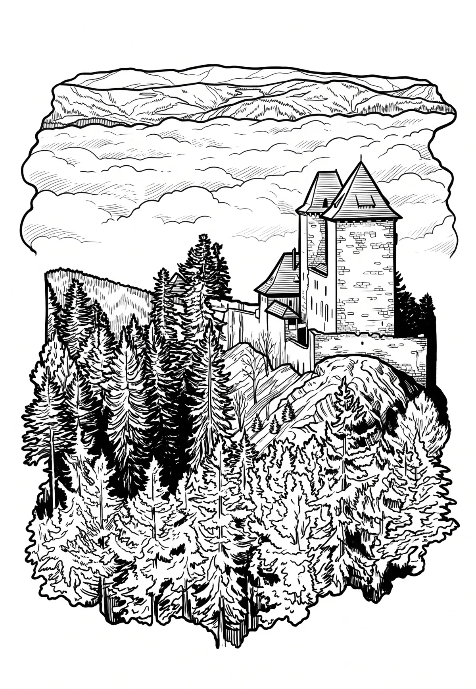

Hrad Kašperk
Kašperk (německy Karlsberg) je zřícenina hradu v Šumavském podhůří v okrese Klatovy v Plzeňském kraji. Nachází se asi 2,5 kilometru severovýchodně od Kašperských Hor v katastrálním území Žlíbek na území přírodního parku Kašperská vrchovina. Zřícenina je chráněna jako kulturní památka a v návštěvních hodinách je přístupná veřejnosti. Hrad založil jako pohraniční pevnost král Karel IV.
Více na Wikipedii